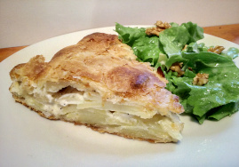

Paté de pomme de terre

Ingrédients
- 1 kg de pommes de terre
- 1 oignon
- 1 gousse d'ail
- 1/2 bouquet de persil
- 1/2 bouquet de coriandre
- 1/2 cuillère à café de poivre
- 1/2 cuillère à café de sel
- 1/2 cuillère à café de curcuma
- 1/2 cuillère à café de paprika
- 1/2 cuillère à café de cumin
- 1/2 cuillère à café de piment doux
- 1/2 cuillère à café de gingembre
- 1/2 cuillère à café de levure chimique
- 1/2 cuillère à café de bicarbonate de soude
- 1/2 cuillère à café de vinaigre
- 1/2 cuillère à café de levure boulangère
- 1/2 cuillère à café de sucre
- 1/2 cuillère à café de safran
- 1/2 cuillère à café de colorant alimentaire
- 1/2 cuillère à café de beurre
- 1/2 cuillère à café d'huile
- 1/2 cuillère à café d'huile pour friture
Préparation
- Éplucher les pommes de terre et les couper en rondelles.
- Éplucher l'oignon et l'ail et les hacher finement.
- Laver et hacher le persil et la coriandre.
- Dans un saladier, mélanger les pommes de terre, l'oignon, l'ail, le persil, la coriandre, le poivre, le sel, le curcuma, le paprika, le cumin, le piment doux, le gingembre, la levure chimique, le bicarbonate de soude, le vinaigre, la levure boulangère, le sucre, le safran, le colorant alimentaire, le beurre et l'huile.
- Dans une poêle, faire chauffer l'huile pour friture.
- Former des boulettes avec le mélange et les faire frire dans l'huile chaude.
- Égoutter les boulettes sur du papier absorbant.
- Servir chaud.